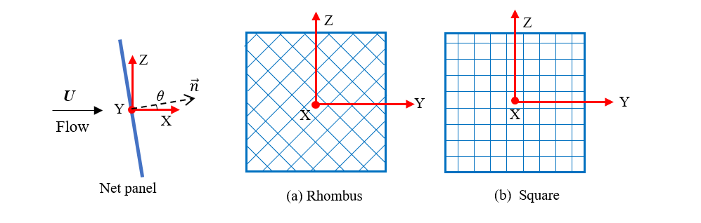

Guide for input file — netPanel(s)¶

There are some assumptions when we generate mesh for simulations:
Although the flow direction can be change in the Environment, we prefer to assume the X+ is the flow direction when we generate the mesh.
MeshLib¶
MeshLib is used to tell the mesh generator which library will be used to
generate mesh.
Here, for net panel(s) is panel.
Environment¶
The information about the environmental conditions.
current: a python list. Unit: [m/s].
One velocity,
[[u,v,w]]. Input the three components of the current velocity that you are indented to use.Multiple velocities,
[[u1,v1,w1],[u2,v2,w2],[u3,v3,w3]...[un,vn,wn]]. Input the current velocities as a list of velocity. The program will run each velocity within the given timeLength sequentially.
waterDepth: a floating point number. Unit: [m]. The depth of water.
waves: a python list or “False”.
If there is no wave, please use
Falseto disable it.If wave are applied to the environment, Please use
[wave height, wavelength]to define a deep water airy wave. Unit: [m]
fluidDensity: a floating point number. Unit: [kg/m^3]. The density of fluid, sea water: 1025, fresh water: 1000.
Net¶
Define the netting of net panel(s)
nettingType: a string to indicate the netting type.
square: square netting that are commonly used in aquaculture cagerhombus: rhombus netting that are commonly used in fishing gear, e.g., trawl net, purse seine.
normalVector: a python list. Unit: [-]. A transformation matrix to convert the position.
The below matrix is define a cartesian coordinate system.
[[1,0,0],
[0,1,0],
[0,0,1]]
netHeight:a floating point number. Unit: [m]. The height of net panels. Here, we assume that all the net panel have the same geometrical characterises.
netWidth:a floating point number. Unit: [m]. The width of net panels. Here, we assume that all the net panel have the same geometrical characterises.
elementOverHeight: a integer number. Unit: [-]. The element that along the height of net panel.
elementOverWidth: a integer number. Unit: [-]. The element that along the width of net panel.
Sn: a floating point number. Unit: [-]. The solidity ratio of netting.
twineDiameter: a floating point number. Unit [m]. The diameter of twine in the physical netting.
meshLength: a floating point number. Unit [m]. The half mesh length of the physical netting.
netYoungmodule: a floating point number. Unit [Pa]. The Young’s modulus of netting.
netRho: a floating point number. Unit: [kg/m^3]. The density of the netting.
TopBar¶
Define the top bar of net panels.
barCenter:a python list. Unit: [m].
One net panel,
[x,y,z]. Input the position of the top bar center.Multiple net panels,
[[x1,y1,z1],[x2,y2,z2],[x3,y3,z3]...[xn,yn,zn]]. If there are multiple net panels, input the position of each top bar center and make it a python list.
barRadius: a floating point number. Unit [m]. The pipe diameter of the top bar.
topBarRho: a floating point number. Unit [kg/m^3-]. The effective density of top bar.
topBarYoungModule: a floating point number. Unit [Pa]. The Young’s modulus of top bar.
Weight¶
Define the weight system of cage.
weightType: a string to indicate the weight type.
sinkers: conventional type, numbers of sinkers are hung at the bottom of fish cageallfixed: all the nodes are fixed. Thus, the fish cage have no deformation.tube: Using sinker tube to keep stretch the net panel.
bottomBarRadius: a floating point number. Unit [m]. The pipe diameter of the sinker tube.
bottomBarRho: a floating point number. Unit [kg/m^3-]. The effective density of floater collar.
bottomBarYoungModule: a floating point number. Unit [Pa]. The Young’s modulus of floater collar.
numOfSinkers: a integer number. Unit: [-]. The number of sinker.
sinkerWeight: a floating point number. Unit [N]. The submerged wight of each sinker.
Boundary¶
hydroModel: a string to indicate the hydrodynamic model. A detailed explanation can be found later.
Screen model:
Screen-S1,Screen-S2,Screen-S3…Screen model-udv: user defined values for CD and CL, e.g.,
Screen-udv-0.2-0.1: 0.2 is drag coefficient, 0.1 is lift coefficientMorison model:
Morison-M1,Morison-M3,Morison-M3…
wakeModel: a string to indicate the wake model.
fixed factor: flow reduction factor is given behind ‘-‘:
factor-0.9loland model:drag coefficient is given behind ‘-‘:
loland-0.5new model by Hui:
hui-1
fixed: The name of the nodes that is going to be fixed in the numerical simulations. e.g.,
topnodes,allnodes.gravity: gravity in the simulation, usually is
9.81
Solver¶
Define the solver of simulation
version: a string to indicate the version of code_Aster. You can use the following type:
stable,testing.coupling: a string to indicate the whether or not using coupling.
False: No coupling. Calculated only with Code_AsterFSI: Fully couple with OpenFoam.simiFSI: Semi coupled, only transfer the value from code_aster to OpenFOAM
method: a string to indicate the method to solve the equation.
HHT: hht-alpha method.alpha:a floating point number for alpha in hht-alpha method.
24.3is the default number for netting.timeStep: a floating point number. Unit [s]. The time step for simulations, usually between 0.2-0.01.
timeLength: a floating point number. Unit [s]. The length of time for the simulation with each current velocity. Usually, 10 s is enough to reach equilibrium.
MaximumIteration: a integer number. Unit: [-]. The number of iteration at each time step, the default value is
1000.Residuals: a floating point number. Unit [-]. The threshold for the maximum of residual.